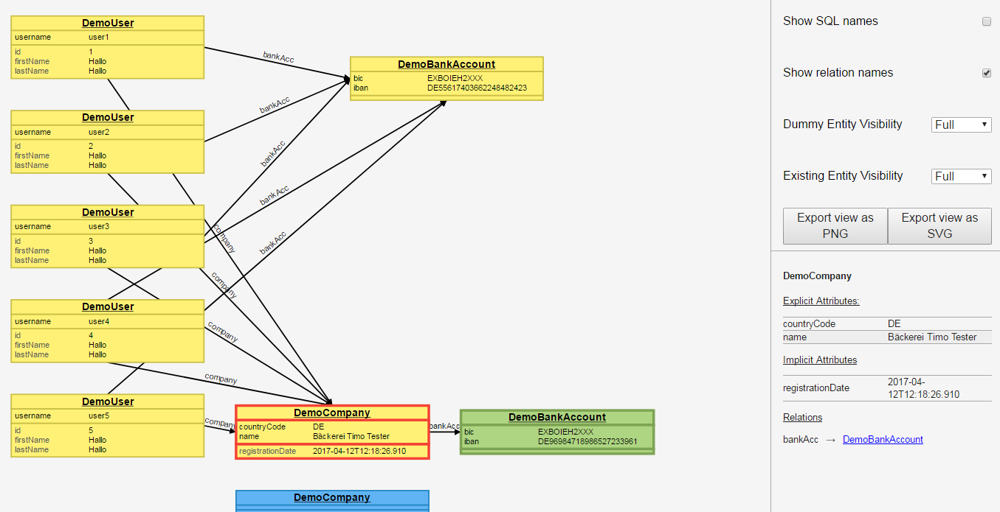

Visualization¶
The RedG Visualizer allows you to inspect the object graph of a RedG instance. This can be very useful for debugging purposes or to simply have a look at the dependencies of your entities.
Preparation¶
Note
RedG's visualization support has to be enabled during code generation time. Look at the documentation for your chosen integration method on how to enable support.
Enabling visualization support will have a small performance penalty and you'll need Jackson as extra dependencies.
After enabling visualization support you have to add jackson-core and jackson-databind as dependencies to your test code.
These two are needed to generate the JSON output you'll need for the visualizer.
<dependency>
<groupId>com.fasterxml.jackson.core</groupId>
<artifactId>jackson-core</artifactId>
<version>2.8.5</version>
<scope>test</scope>
</dependency>
<dependency>
<groupId>com.fasterxml.jackson.core</groupId>
<artifactId>jackson-databind</artifactId>
<version>2.8.5</version>
<scope>test</scope>
</dependency>
Now there are two ways to obtain the entity graph as JSON code:
- In the test, output the result of
redG.getVisualizationJson()into a file or to the console. - Place a breakpoint somewhere in your test where you have access to the
redGobject, let the test run until it hits the breakpoint and evaluateredG.getVisualizationJson()with the help of your IDE. Copy the returned string.
Visualization¶
With the JSON output either in your clipboard or a file, visit the RedG Visualizer site and paste (or drag & drop) the JSON into the editor. Hit the "Visualize Me!" button and let the visualization render.
 An example visualization
Entity view¶
The main panel of the visualizer shows a graphical representation of your RedG object graph. When the graph is rendered for the fist time a layout algorithm is applied. This results in a nice initial layout. When visualizing large object graphs, entities may appear below or right of your initial viewport. Either zoom out or pan to see them.
| Feature | Controls |
|---|---|
| Zoom | Use your mouse wheel or double click (Pinch or double tap on touchscreens) |
| Pan / Move viewport | Click and drag on background (Cursor is default) |
| Select entity | Click an entity. Click again to deselect it |
| Move an entity | Click and drag an entity (Cursor is pointer) |
Detail view¶
When you select an entity in the entity view, the detail view in the lower right corner will show all attributes (explicit & implicit) in full length and will show a list of all outgoing relations. You can click on a relation link to directly select the referenced entity.
Options¶
The upper right panel shows the available options and the export buttons.
| Option | Type | Explanation |
|---|---|---|
| Show SQL names | Checkbox | If checked, the SQL table and column names will be shown instead of the Java identifiers |
| Show relation names | Checkbox | If checked, the relation arrows will show a text with the relation name |
| Dummy Entity Visibility | Combo-Box |
|
| Existing Entity Visibility | Combo-Box |
|
| Export view as PNG | Button | Lets you export the current viewport (exactly what you see on the left) to a PNG file. Will show a popup where you can choose the image resolution |
| Export view as SVG | Button | Lets you export the current viewport (exactly what you see on the left) to a SVG file. All information (entities & relations) are included so you could manipulate the viewport later. Used fonts might not be available on a different computer |